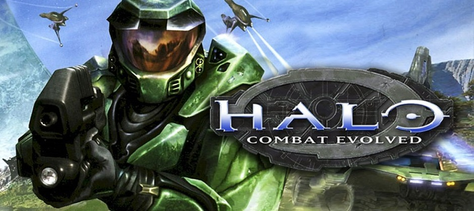
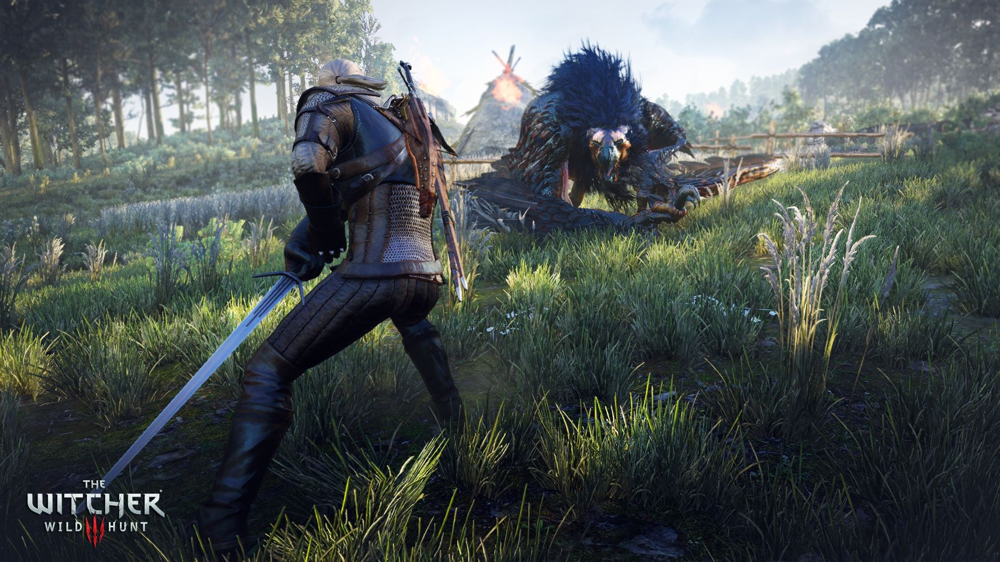

Et le jeu de l'année va à ...
Halo : Combat evolved
Halo: Combat Evolved est un jeu vidéo de tir à la première personne (ou FPS) développé par Bungie et publié par Microsoft Game Studios. Il s'agit du premier épisode de la série Halo. Il est sorti en même temps que la console Xbox, le 15 novembre 2001 aux États-Unis et le 14 mars 2002 en Europe. Avec plus de cinq millions d'exemplaires vendus dans le monde le 9 novembre 2005, Halo est considéré comme un succès mondial, applaudi par les critiques et recevant de nombreuses récompenses.
L'histoire se déroule au XXVIe siècle. Un vaisseau de guerre humain tombe sur une structure inconnue du nom de Halo en tentant d'échapper à une armada covenant. Le joueur incarne un super-soldat, le Spartan John-117 (Master Chief pour son grade en VO et Adjudant dans la VF) et est accompagné par Cortana, une intelligence artificielle intégrée à l'interface neurale du spartan. Son scénario, considéré comme « très prenant », a été adapté et développé dans des livres.
Microsoft a sorti des versions pour Windows et Mac OS en 2003, et le jeu a été réédité en HD : Halo: Combat Evolved Anniversary sorti en novembre 2011 ainsi qu'une préquelle, Halo: Reach, sortie le 14 septembre 2010. En outre, le jeu est ressorti en version originale en téléchargement sur le marché de la Xbox 360.
Assassin's Creed

Assassin's Creed est un jeu vidéo développé par Ubisoft Montréal sous la direction de Patrice Désilets et Jade Raymond. Il s’agit d’un jeu d'action-aventure au gameplay non-linéaire, incorporant des éléments d’infiltration. Il est édité par Ubisoft en novembre 2007 sur PlayStation 3 et Xbox 360, puis en avril 2008 sur PC (Windows), dans une version sous-titrée Director's Cut.
L'histoire est axée sur Desmond Miles qui revit les actions de son ancêtre à l'aide d'une machine nommée « Animus ». Son aïeul Altaïr est un assassin d'élite agissant en Terre sainte à l'époque de la troisième croisade. Tombé en disgrâce, Altaïr doit exécuter plusieurs missions pour regagner son rang dans sa communauté. Le joueur contrôle librement le héros dans quatre villes (Damas, Jérusalem, Acre et Masyaf) à la recherche de ses cibles. La secte ou société secrète des Assassins présentée dans le jeu est librement inspirée des maigres traces historiques laissées par les Nizârites, ainsi que par des récits de fiction comme le roman Alamut.
Salué pour son univers original et sa réalisation impressionnante, Assassin's Creed connait un très grand succès public. Avec huit millions d'unités vendues, il dépasse grandement les prévisions de l'éditeur et lance une nouvelle franchise-clé pour Ubisoft. La série se développe alors par le biais de plusieurs suites et œuvres dérivées (jeux, courts métrages, romans et bande dessinées).
Pokémon

Pokémon (prononcé [pɔ.ke.mɔn] ; en japonais ポケモン, Pokemon, prononcé [po̞kʲe̞mõ̞ɴ]) est une franchise créée par Satoshi Tajiri en 1996, présente en particulier en jeu vidéo, dans des séries éditées par Nintendo. Selon les statistiques de Nintendo en 2010, les jeux Pokémon se sont vendus à environ 250 millions d’unités. Le jeu vidéo Pokémon Rouge et Bleu s’est vendu à plus de 30 millions d’exemplaires, ce qui en fait un record des ventes dans l’histoire du jeu vidéo.
La franchise est également exploitée sous forme d’anime, de mangas, et de jeux de cartes à collectionner. Dans la série animée homonyme, le personnage principal, Sacha, voyage à travers diverses régions fictives dans le but d’attraper de nouvelles sortes de monstres éponymes, un concept qu’on retrouve également dans les jeux vidéo de la franchise. Pokémon a eu un impact culturel très important dans les pays où il a été introduit, dont le Japon, les États-Unis, le Canada, la France et d'autres pays européens.
The Witcher 3:Wild Hunt
The Witcher 3: Wild Hunt (en polonais : Wiedźmin 3: Dziki Gon) est un jeu vidéo de type action-RPG développé par le studio polonais CD Projekt RED. Sorti le 19 mai 2015 sur PC (Windows), PlayStation 4 et Xbox One, il fait suite narrativement à The Witcher (2007), et The Witcher 2: Assassins of Kings (2011). Il est ainsi le troisième jeu vidéo à prendre place dans l'univers littéraire du Sorceleur, créé par l'écrivain polonais Andrzej Sapkowski, mais aussi le dernier à présenter les aventures de Geralt de Riv.
Le jeu, situé dans un monde médiéval-fantastique, suit les traces du sorceleur Geralt de Riv, un chasseur de monstres dont la fille adoptive, Ciri, est menacée par la Chasse sauvage. Des références sont faites au contenu des livres écrits par Sapkowski, mais l'intrigue est inédite et propose une conclusion à la trilogie entamée avec le premier jeu, sorti huit ans plus tôt. Contrairement aux deux autres opus de la série, The Witcher 3 prend place dans un monde ouvert en usant d'une narration à la troisième personne, et se concentre sur l'utilisation des talents de combat et de détective de Geralt pour mener à bien des contrats et explorer l'environnement. Le tout se déroule dans le cadre d'une quête principale à plusieurs embranchements, qui peut se résoudre selon 36 fins différentes, et une multitude de missions secondaires.
Développé en trois ans et demi avec des moyens proches des superproductions occidentales habituées à concevoir des jeux vidéo AAA, The Witcher 3 concentre nombre d'ambitions : ses créateurs veulent entériner la légitimité des studios européens à développer des RPG de qualité, et le jeu s'éloigne de plus en plus de l'intrigue canonique de la saga littéraire du Sorceleur, éminemment respectée en Pologne.
Vendu à plus de 10 millions d'exemplaires moins d'un an après sa sortie, le jeu obtient un accueil public et critique unanimement élogieux et un colossal succès commercial. Il se voit décerner un record de distinctions de « jeu de l'année » et devient de l'avis de tous la nouvelle référence du genre, constamment utilisé comme outil de comparaison par les joueurs et les professionnels de l'industrie vidéoludique pour évaluer la qualité des nouveaux jeux action-RPG. Deux extensions lui sont ajoutées en octobre 2015 et en mai 2016, Hearts of Stone et Blood and Wine, et un jeu vidéo entièrement dévoué au mini-jeu de cartes présent dans l'intrigue, Gwent: The Witcher Card Game, est lancé à l'été 2017.